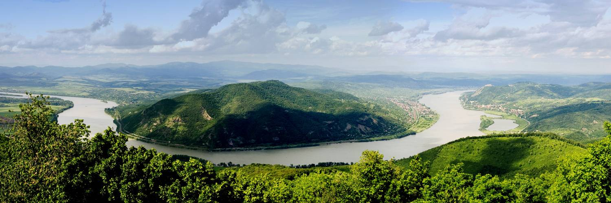
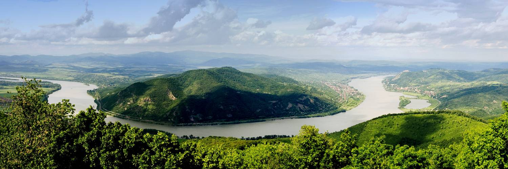
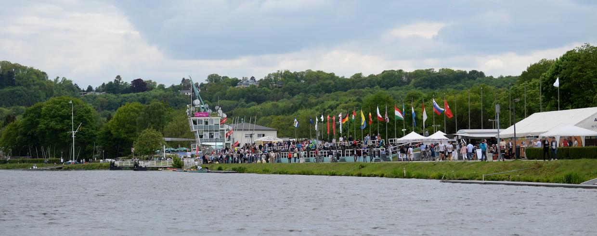

Evezés
Evezés
Evezés
EvezésAz evezést gyakran emlegetik a vizek királynőjeként, és ez talán nem is véletlen. Ötvözi mind a kemény fizikai állóképességet és erőt, mind pedig egyfajta művészetet. Ehhez a sporthoz több kell, mind csupán erősnek lenni, a keskeny hajó megfelelő futtatása ennél sokkal összetettebb feladat. Az evezős mozgás gördülékenységének és minél tökéletesebb technikájának elsajátítása hosszú évek munkájának eredménye, talán pont ezért is mondják, hogy az evezés nem csak a fiatalok sportja. Engem is ez foghatott meg az evezésben, hogy itt többre van szükség, mint egyszerűen erőre. Az evezés kiskorom óta hatalmas szerepet játszik az életemben hiszen már 11 éve ezzel a sporttal töltöm a szabadidőm legnagyobb részét.
Vácon születtem és azóta is itt élek, ahol a festői szépségű Dunakanyar kínál lehetőséget az evezés szerelmeseinek a sport űzésére. A körülmények sokszor sajnos nem a legideálisabbak a vízi teher- és turistaforgalom miatt, azonban egy idő után ez is megszokható.
A hazai versenyeink jelentős része kiépített versenypályán kerül megrendezésre, többnyire Szegeden és a Velencei-tavon, tartanak azonban versenyeket Csepelen és Szolnokon is.
A nagyobb külföldi nemzetközi versenyeket évről-évre különböző országokban tartják, így olykor lehetőségünk nyílik világot látni is. Eddig már volt szerencsém Essenben, Krefeldben (Németország), Poznanban (Lengyelország), Plovdivban (Bulgária) és Bledben (Szlovénia) is versenyezni, és a jövőben remélem a listám még bővülni fog.
Az egyesületünk bemutatkozó kisfilmje: Vác Városi Evezős Club
 

Egy evezős edzés a Dunakanyarban

Sukoró, Velence-tavi Evezőspálya
